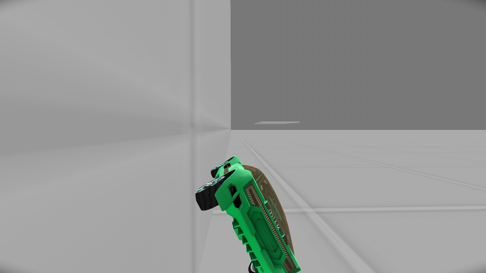
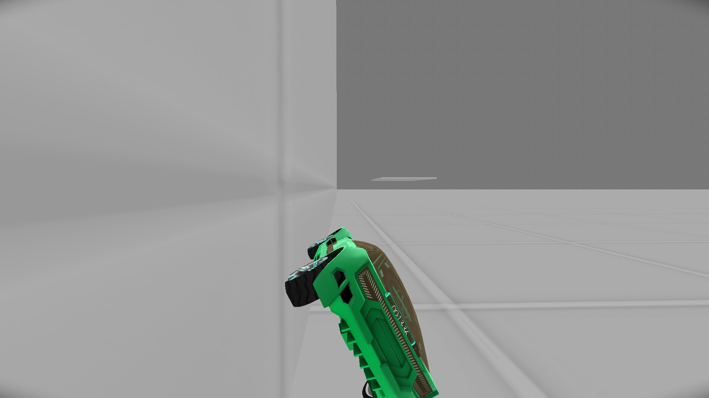

A Guide To Most Distance Mechanics
> Intentional Unitying
I guess I haven't covered this but a 'Unity' in this game is when you clip through a solid object. Its called that because the game runs on Unity. Anyways, in some cases you might want to unity through an object. While you can't actually clip into or through an object entirely without dying, (unless it is animated), you can manage to clip your car partially through something, which can be helpful in certain cases. Say there is a very thin wall, and right behind that wall is the endzone grid. If you can clip just enough of your car through the wall, you would be able to touch the endzone grid and win. Other things right behind thin walls such as triggers, checkpoints, teleporters, and warp anchors also could be things you would be able to touch/activate in this manner.
So this brings me to how to unity through things intentionally.
Through walls, I find that the best way is to position yourself like this.

And then let the car drift down the wall naturally by way of gravity. When the car gets to be about angled halfway to being flat on the ground, (45 degrees), you want to grip, drive forward, and turn toward the wall. This is what I found worked best, but it should be noted how jank this is going to be regardless. There very well may be a method that works better though.
Through a floor, I find that landing the car on its side gives the best chances. That's about all the advice I can give there though. I will note that the wall strategy above seems to clip through the floor well sometimes if you don't do the drive forward and turn toward the wall thing.
So this brings me to how to unity through things intentionally.
Through walls, I find that the best way is to position yourself like this.

And then let the car drift down the wall naturally by way of gravity. When the car gets to be about angled halfway to being flat on the ground, (45 degrees), you want to grip, drive forward, and turn toward the wall. This is what I found worked best, but it should be noted how jank this is going to be regardless. There very well may be a method that works better though.
Through a floor, I find that landing the car on its side gives the best chances. That's about all the advice I can give there though. I will note that the wall strategy above seems to clip through the floor well sometimes if you don't do the drive forward and turn toward the wall thing.
<< < 16 > >>
1 2 3 4 5 6 7 8 9 10 11 12 13 14 15 16 17
1 2 3 4 5 6 7 8 9 10 11 12 13 14 15 16 17
• Using Grip And Thrusters To Turn Faster On The Ground • Faster Vertical Upward Landings • Hitting-The-Ground Running (Jumpstart) • Accelerating Wheels Off Platform And Then Driving Onto It • When Front Wheels Accelerate And When Back Wheels Accelerate • Difference In The Power Of the Gas Function And The Reverse Function • Jumping • Sawboosting/Rollerboosting • Bomb/Mine Boosting • Going In The Center Of A Portal Is Faster • Lasers Can Be Used To Change Car Collision • Laser Boosting • Gripping Makes You Slide In A Direction, Also High Gravity • Car Angle When Going Off A Surface • Suspension Bounce • Intentional Unitying • Infinite Killgrids Are Different Than Normal Killgrids •